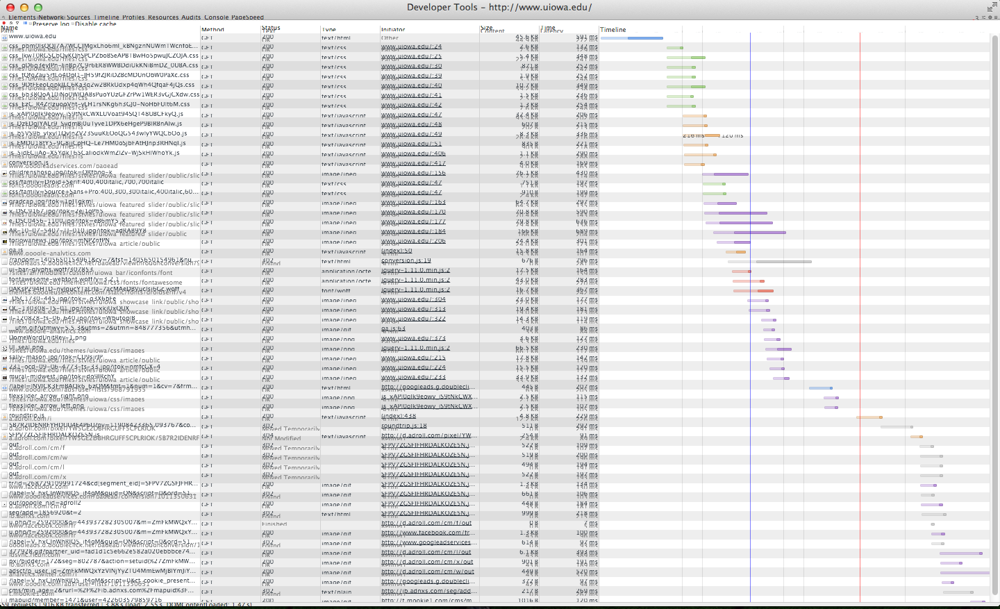

Varnish 101
An introduction to caching, Varnish, and .vcl files.
James Fuller
Web Application Developer
University of Iowa
d.o: fullerja
Follow along at: http://rawgit.com/jwfuller/varnish101/master/index.html#/
What is Varnish?
- “A web application accelerator also known as a caching HTTP reverse proxy.”
- A piece of software that makes dynamic websites really really really fast.
- It sits between the client and the webserver and caches webpages.
Drupal with out any caching
~ 3 mph
 http://s0.geograph.org.uk/photos/06/39/063959_49f25f81.jpg
http://s0.geograph.org.uk/photos/06/39/063959_49f25f81.jpg
Drupal with core caching
~ 80 mph
http://upload.wikimedia.org/wikipedia/commons/2/2d/390017_Rugby_station.jpgDrupal with Varnish
~ 357.2 mph
 https://c2.staticflickr.com/2/1242/1385598849_303b87f58c_z.jpg?zz=1
https://c2.staticflickr.com/2/1242/1385598849_303b87f58c_z.jpg?zz=1
Loading a webpage from Drupal
Plain ol' Drupal
- User requests a URL
- Apache sends it to Drupal
- Drupal bootstraps and initializes the database, sessions etc.
- Maps the path to a callback function, which gets the primary content
- Modules can hook into the process and extend functionality and alter the content
- The Theme System generates the HTML and styles it.
- Drupal returns a fully formed HTML page to the browser
- The browser renders the HTML page for the user
Drupal with core caching
- User requests a URL
- Apache sends it to Drupal
- Drupal bootstraps and initializes the database, sessions etc.
- Maps the path to a callback function, which gets the primary content
- Modules can hook into the process and extend functionality and alter the content
- The Theme System generates the HTML and styles it.
- Drupal returns a fully formed HTML page to the browser
- The browser renders the HTML page for the user
Drupal (Now with Varnish!)
- User requests a URL
- Apache sends it to Drupal
- Drupal bootstraps and initializes the database, sessions etc.
- Maps the path to a callback function, which gets the primary content
- Modules can hook into the process and extend functionality and alter the content
- The Theme System generates the HTML and styles it.
- Drupal returns a fully formed HTML page to the browser
- The browser renders the HTML page for the user
How does Varnish do this?
- The first time a request is made, it pass through Varnish to Drupal.
- Drupal does the long look up and responds.
- Varnish caches a copy of that response into memory.
- The second time a response is made, Varnish responds with its copy. (Skipping Drupal entirely)
Varnish can’t do everything
Metrics
What should you measure?
- Time to First Byte
- Number of requests per second
Metrics
How can you measure it?
- Time to First Byte
- For publically accessible web servers - www.webpagetest.org
- For local development or web servers – Chrome Dev Tools
- Number of Request per second
- Load testing tools – JMeter, BlazeMeter, Siege, Apache Benchmark
How about some Data
- Drupal
- 8130 ms
- ~10 concurrent requests
- Drupal w/ core caching
- 2090 ms
- ~100 concurrent requests
- Drupal w/ Varnish
- 68 ms
- 2000+ concurrent requests
Installation
(20,000 ft view)
- Download and install Varnish
- (apt-get, yum, make/install)
- Swap Apache off port 80 and put Varnish on
- Adjust your configuration in the .vcl file
- Install the Drupal Varnish module
- (including editing your settings.php file)
- Adjust your Performance settings
Anatomy of a VCL
Backend Probe
# Define the health check for Drupal Servers.
probe drupal_healthcheck {
.url = "/health_check.php";
.interval = 5s;
.timeout = 1s;
.window = 5;
.threshold = 3;
.expected_response = 200;
}
Backend Definitions
# Define the list of backends (web servers).
# Port 80 Backend Servers
backend web1 {
.host = "192.10.0.1”;
.probe = drupal_healthcheck;
}
backend web2 {
.host = "192.10.0.2”;
.probe = drupal_healthcheck;
}
# Port 443 Backend Servers for SSL
backend web1_ssl {
.host = "192.10.0.1”;
.port = "443”;
.probe = drupal_healthcheck;
}
backend web2_ssl {
.host = "192.10.0.2”;
.port = "443”;
.probe = drupal_healthcheck;
}
Directors
# Define the director that determines how to distribute incoming requests.
director default_director round-robin {
{ .backend = web1; }
{ .backend = web2; }
}
director ssl_director round-robin {
{ .backend = web1_ssl; }
{ .backend = web2_ssl; }
}
Basic Receiver Sub Routine
# Respond to incoming requests.
sub vcl_recv {
# Set the director to cycle between the web servers.
if (server.port == 443) {
set req.backend = ssl_director;
}
else {
set req.backend = default_director;
}
}
Basic Fetch Sub Routine
sub vcl_fetch {
# Don’t allow static files to set cookies.
if (req.url ~ "(?i)\.(png|gif|jpeg|jpg|ico|swf|css|js)(\?[a-z0-9]+)?$") {
unset beresp.http.set-cookie;
}
# Allow items to be stale if needed.
set beresp.grace = 1h;
}
Deliver Sub Routine
# Set a header to track a cache HIT/MISS.
sub vcl_deliver {
if (obj.hits > 0) {
set resp.http.X-Varnish-Cache = "HIT";
}
else {
set resp.http.X-Varnish-Cache = "MISS";
}
}
Additional Resources
- VCL files
- 4Kitchens
https://fourkitchens.atlassian.net/wiki/display/TECH/Configure+Varnish+3+for+Drupal+7 - Lullabot
https://www.lullabot.com/sites/lullabot.com/files/default_varnish3.vcl_.txt
- 4Kitchens
- Caching Deep Drive – DrupalCon Austin
https://austin2014.drupal.org/session/caching-deep-dive - Sweet VM for playing with courtesy of:
- Campbell Vertesi - Technical Architect
- Earnest Berry - Senior Developer at The Economist
- Jason Ford - CTO of BlackMesh Managed Hosting